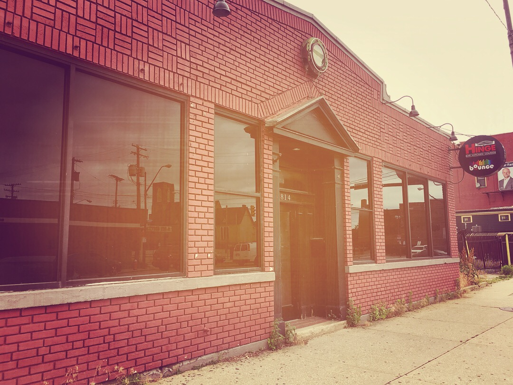

Oral History by Katie Horowitz
-
> is an Assistant Professor of Gender & Sexuality Studies at Davidson College, NC, and
author of Drag, Interperformance, and the Trouble with Queerness (Routledge, 2020).
Katie opens the conversation by describing the spatial layout of Bounce/Union Station.
KATIE: When I entered the space, the first thing that struck me is the way in which the layout of Bounce and Union Station respectively were such perfect envelopes for the gay and lesbian cultures that they encompassed. What I mean by that is that Bounce is this quite large building, and it was divided in two. You’d enter into Union Station, which kind of felt like a train car—it was a long, deep, but narrower space. At the front of the room were a whole bunch of pool tables, and then to right was the bar, and then on the left walls there were some booths and tables toward the back.
And then all the way at the back of the space, there was the stage, which was really just a makeshift rectangular platform, and then to the left of the stage there was a small dressing room. That’s where The Cleveland Kings and Girls would perform on Wednesdays. And they were/are a troupe of drag kings, but at the time, we were calling bio femme. And that’s a genre of performance that goes by many names (some call it bio queen, some say faux queens), but generally bio femmes are performers who were assigned female at birth and performed as women. Whereas drag kings are generally, again, those who are assigned female at birth and perform as men. Some drag kings identify as cis women, some identify as trans masculine, trans men, or non-binary.
But the reason that the shape of the space struck me so much is that this sort of train car aesthetic, and the under-producedness of it, really resonated with me as being evocative of lesbian culture. And it was called Union Station, it seemed to be intentionally evoking a train station aesthetic. And to me there’s something about what you might call lesbian and trans masculine culture that very much embraces working class aesthetics, that has an aesthetic of imperfection and of grittiness.
You could go back and forth between the two, it was all one building. But Bounce was sort of on the other side of the wall from Union Station. And that’s where the drag queens performed. And it had a much more clubby aesthetic. It had a round stage with a catwalk, and it had two levels, so there was a balcony-like level that surrounded it that you could go up a ramp to get to. And there was a bar on the corner of that room, and then the DJ booth. And there were lots of lights and those shows felt very produced, and in fact, after the Saturday night drag shows, there would always be a dance party with house music playing. And that to me felt much more evocative of gay male culture and trans feminine culture. Even the name Bounce evokes youthfulness and fun. All of the lights and the nightclub aesthetic of the space, to me, really sits with some of our stereotypical ideas about what’s embraced in gay male culture. And, you know, in the book I go on to challenge some of these stereotypes. But I do think that it’s significant that the two spaces of Bounce and Union Station were so different in layout, in appearance, and in the type of crowd that they drew. Because truly, gay men and trans women tended to congregate in Bounce whereas lesbians and trans men tended to congregate in Union Station for the most part. So I guess that’s my starting point about the spaces that we spent so much time in, and that drag was taking place in, in the early 2000s through the mid-2010s.
-
Displacement in the wake of Bounce's closure
LEILA: Thank you so much for providing that context and painting a picture of the spatial layout and occupancy. You said it was active till the 2010s. How do you find the community, those who frequented Bounce/Union Station, to be impacted after the bar’s closure?
-

Exterior View. (Courtesy of Katie Horowitz)
KATIE: I don’t think I can overstate how devastating that loss felt to a lot of us. I promise I’ll get to your question. But I think one of the important things to know about Bounce/Union Station is that in its heyday, it was an 18+ club. So there were a lot of kids who went there, and this was their first experience being accepted into the queer community. It really felt like home to a lot of people, it felt like the place where even if they weren’t accepted by their biological families, or they were ostracized in school, this was a place where they can go and be with their people, and be accepted. And there were a lot of really outrageous characters who frequented Bounce. And so one of the performers who I worked with, in an interview that I did with her after Bounce had closed, she was talking about how it really felt like a place where you could experiment. Because no matter how avant-garde you wanted to be, no matter how over-the-top you wanted to style yourself, there was always going to be someone there who was even further out-there. So in that way, it felt really safe for a lot of young queer people.
Toward the end of its existence, it became a 21+ space, I think that was a real loss for a lot of people. We don’t have, or at least to my knowledge, we don’t have an LGBT youth center. We do of course have the LGBT Center in Cleveland, but I think that a lot of kids just felt like this was the place they could go to have fun, and they weren’t getting that anywhere else in their life. When Bounce changed their policy, it was really hard for a lot of the 18-20-year old crowd.
To get back to the question of where people have gone since then—I think that the disappearance of Bounce is part of a larger nation-wide trend of disappearing gay and lesbian bars. I think we may seem to see that partly as a good thing—that queer folks are more widely accepted, so that we maybe have less of a need for those kinds of safe spaces. For a lot of us, we feel safer going into straight bars and mainstream bars. I think that’s probably more true for white queer folks and for cisgender queer folks than it is for trans and non-binary queer folks and queer and trans folks of color.
But I think we might also see it as sort of an effect of Capitalism. That a lot of gay bars, and particularly in the neighborhood that you’re looking at on Detroit and 29th, I think that the later-ownership of Bounce decided to prioritize fitting into a gentrifying neighborhood over commitments to the queer community that was already there. And so we can even see that in the renaming of the bar… So that block got bought up and renamed ‘Hingetown.’ So the owners of Bounce renamed it ‘Bounce Hinge’ and so it was clearly an effort to try to fit into this new reorientation of that block towards young, white, upwardly-mobile millennial families. And it clearly pushed out a lot of folks who spent time in that block previously who could no longer afford to live there and whose gathering spaces were eliminated in favor of juice bars and bike shops.
The folks that I know who used to frequent Bounce/Union Station have told me that they pretty much go to straight bars now when they want to go out. I know that Twist in Lakewood has kind of taken over some of the functions of Bounce, at least for a while. Twist was never an explicitly gay bar, but it was an accepting and welcoming space so a lot of folks felt like they could go there and be comfortable. I believe that Twist at one point was sponsoring a gay kickball/softball team. So they kind of picked up that function. I do know that there has not been a singular drag space that has cropped up since the closure of Bounce. Drag happens in various locations but Bounce used to be THE place to go if you wanted to see drag. And now it’s more like, wherever individual performers can find a gig at any given time, is where a show will happen. I know the Cleveland Kings and Girls have struggled to find a consistent location to perform at since Bounce closed, and that feels like a real loss, certainly because drag kings are already under-represented. Everyone pretty much has at least heard of a drag queen, but even within the LGBT community, folks will say ‘what’s a drag king? I’ve never heard of that.’ So you know, they’re being further marginalized now because they don’t have a place to go, and the audience that they had cultivated over the years of predominantly lesbian, queer women, trans masculine folks, don’t have a centralized gathering space anymore.
That building was really perfect for what it was. Even the best efforts of the owners to become part of this wave of gentrification didn’t really work, because even if there is something there now, there was a period of year that the building stood empty. And it had been a place that was so vital, and full of life, and full of community. The Pride afterparties would take place at Bounce. So many people I knew met their first love there and ended up marrying or partnering long-term. People met their best friends there, people would go there for their birthdays, people would go there just to watch Glee or RuPaul’s Drag Race or whatever gay show was on. People talk to me about just showing up there when they were depressed because they knew that they would run into someone they knew who would be able to lift them up and help them out. So it was a place where life events, both big and small, happened on a consistent basis. And where people who felt really dispossessed in other parts of their life felt grounded and loved and accepted. And I don’t think that anything has cropped up that replaces that. I think gay nightlife has taken on a different flavor by necessity because now it’s about finding ways to make space for yourself in more mainstream straight-oriented clubs and bars than about creating something that is intended for queer people from the outset.
-
Placemaking in an Abolitionist Framework
LEILA: Would you mind talking a bit about the importance
and necessity of these trans-inclusive and Black, Indigenous, and
POC-centered spaces in this moment (amid the protests) that police
brutality and white supremacy have become a more mainstream
conversation?
KATIE: That’s a really important question. And it’s something I think about a lot because in my work right now. I am part of a collective that is doing jail support here in Charlotte—we basically sit outside the jail and provide services for people who are being released, and we have an abolitionist orientation. So this is something that’s really important to me. I think that part of a prison abolitionist and police abolitionist framework requires creating the world in which we see ourselves safe. And we don’t need prisons and police to keep us safe, because they already don’t. They keep a very select demographic of property-owning white folks safe, and even that’s not reliable. They don’t do much of anything to protect anyone who is not wealthy and white. And so part of that vision of the world in which we keep ourselves safe is about building community and building relationships of trust in which you know the people around you well enough, and care about them enough that if someone causes you harm, you’re not going to call the police. You’re going to call upon other folks in the community to facilitate holding each other accountable and repairing the harm that was done, so to rebuild trust within the community.
In order to do that, you need spaces to go. One thing that makes this work especially hard to do is that a lot of folks who are invested in abolition don’t own property, or they’re houseless, or they don’t have stable housing, they don’t have food security. Building communities when you don’t have a physical space to go is a really difficult proposition and an uphill battle. And having places like the kind of place that Bounce/Union Station used to be is vital to being able to do that work. One of the beautiful things to me about Bounce was that we had such a diverse population of folks there. It was racially diverse, it was diverse in terms of gender, there were older folks who were there, there were 18 year olds who were there, there were folks with physical and intellectual disabilities who came there. Because we all have this love of that place, Bounce, we kept coming and we got to know each other and we got to connect with people who we probably wouldn’t have met otherwise. I don’t think that Bounce was any kind of a utopia, but I think there was potential there that does not exist within a more homogenous and homogenizing place like Hingetown. So in order to protect the most marginalized among us, there needs to be opportunities for those most marginalized folks to a) have stability and b) to connect with folks who currently have the kind of privilege to be able to support them with the resources that marginalized folks don’t necessarily have. We’re finding fewer and fewer spaces in which to do that in the wake of all of this gentrification. So we have to be more intentional about creating those spaces if we want to move forward in ways that are centered on Black and Indigenous queer and trans folks.
• • •